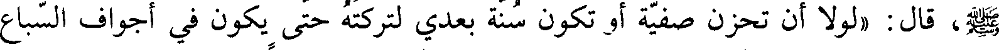
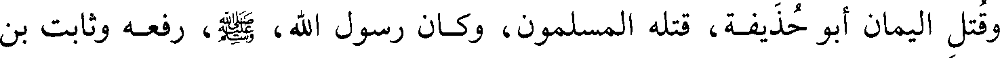
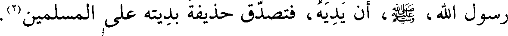
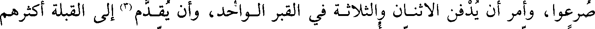
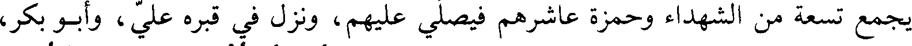
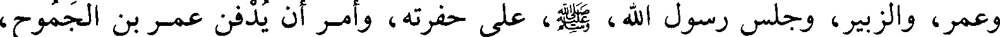

File: 000330.gt.txt (if the image is defective, simply delete all Arabic text and the line will be excluded)

وبه رمق فقال للذي رآه أبلغ رسول الله صلى الله عليه وآله وسلم عني السلام وقل له جزاك الله عنا خير ما
File: 000331.gt.txt (if the image is defective, simply delete all Arabic text and the line will be excluded)
جزى نبيا عن أمته وأبلغ قومي السلام وقل لهم لا عذر لكم عند الله إن خلص إلى
File: 000332.gt.txt (if the image is defective, simply delete all Arabic text and the line will be excluded)

(رسول الله صلى الله عليه وآله وسلم أذى وفيكم عين تطرف ثم مات(1)
File: 000333.gt.txt (if the image is defective, simply delete all Arabic text and the line will be excluded)
ووجد حمزة ببطن الوادي قد بقر بطنه عن كبده ومثل به فجذع أنفه وأذناه فحين رآه رسول الله صلى الله عليه وآله وسلم
File: 000334.gt.txt (if the image is defective, simply delete all Arabic text and the line will be excluded)

قال ( لولا أن تحزن صفية أو تكون سنة بعدي لتركته حتى يكون في أجواف السبع
File: 000335.gt.txt (if the image is defective, simply delete all Arabic text and the line will be excluded)

(وحواصل الطير ولئن أظهرني الله على قريش لأمثلن بثلاثين رجلا منهم
File: 000336.gt.txt (if the image is defective, simply delete all Arabic text and the line will be excluded)

وقال المسلمون لنمثلن بهم مثلة لم يمثلها أحد من العرب فأنزل الله في ذلك
File: 000337.gt.txt (if the image is defective, simply delete all Arabic text and the line will be excluded)

وإن عاقبتم فعاقبوا بمثل ما عوقبتم به ) الآية(2) فعفا رسول الله صلى الله عليه وآله وسلم وصبر ونهى)
File: 000338.gt.txt (if the image is defective, simply delete all Arabic text and the line will be excluded)
وأقبلت صفية بنت عبد المطلب فقال رسول الله صلى الله عليه وآله وسلم لابنها الزبير لتردها لئلا
File: 000339.gt.txt (if the image is defective, simply delete all Arabic text and the line will be excluded)
ترى ما بأخيها حمزة فلقيها الزبير فأعلمها بأمر النبي صلى الله عليه وآله وسلم فقالت إنه بلغني أنه مثل
File: 000340.gt.txt (if the image is defective, simply delete all Arabic text and the line will be excluded)

بأخي وذلك في الله قليل فما أرضانا بما كان من ذلك لأحتسبن ولأصبرن فأعلم الزبير
File: 000341.gt.txt (if the image is defective, simply delete all Arabic text and the line will be excluded)
النبي صلى الله عليه وآله وسلم بذلك فقال خل سبيلها فأتته وصلت عليه واسترجعت وأمر رسول
File: 000342.gt.txt (if the image is defective, simply delete all Arabic text and the line will be excluded)

وكان في المسلمين رجل اسمه قزمان وكان رسول الله صلى الله عليه وآله وسلم يقول أنه من أهل
File: 000343.gt.txt (if the image is defective, simply delete all Arabic text and the line will be excluded)

النار فقاتل يوم أحد قتالا شديدا فقتل من المشركين ثمانية أو تسعة ثم جرح فحمل
File: 000344.gt.txt (if the image is defective, simply delete all Arabic text and the line will be excluded)

إلى داره وقال له المسلمون أبشر قزمان قال بما أبشر وأنا ما قاتلت إلا عن أحساب
File: 000345.gt.txt (if the image is defective, simply delete all Arabic text and the line will be excluded)
قومي ثم اشتد عليه جرحه فأخذ سهما فقطع رواهشه فنزف الدم فمات فأخبر رسول
File: 000346.gt.txt (if the image is defective, simply delete all Arabic text and the line will be excluded)
وكان ممن قتل يوم أحد مخيريق اليهودي قال ذلك اليوم ليهود يا معشر يهود
File: 000347.gt.txt (if the image is defective, simply delete all Arabic text and the line will be excluded)

لقد علمتم أن نصر محمد عليكم حق فقالوا إن اليوم يوم السبت فقال لا سبت وأخذ
File: 000348.gt.txt (if the image is defective, simply delete all Arabic text and the line will be excluded)
سيفه وعدته وقال إن قتلت فمالي لمحمد يصنع به ما يشاء ثم غدا فقاتل حتى قتل
File: 000349.gt.txt (if the image is defective, simply delete all Arabic text and the line will be excluded)

وقتل اليمان أبو حذيفة قتله المسلمون وكان رسول الله صلى الله عليه وآله وسلم رفعه وثابت بن
File: 000350.gt.txt (if the image is defective, simply delete all Arabic text and the line will be excluded)

قيس بن وقش مع النساء فقال أحدهما لصاحبه وهما شيخان ما ننتظر أفلا نأخذ
File: 000351.gt.txt (if the image is defective, simply delete all Arabic text and the line will be excluded)

أسيافنا فنلحق برسول الله صلى الله عليه وآله وسلم لعل الله أن يرزقنا الشهادة ففعلا ودخلا في الناس ولا
File: 000352.gt.txt (if the image is defective, simply delete all Arabic text and the line will be excluded)

يعلم بهما فأما ثابت فقتله المشركون وأما اليمان فاختلفت عليه سيوف المسلمين فقتلوه
File: 000353.gt.txt (if the image is defective, simply delete all Arabic text and the line will be excluded)

ولا يعرفونه فقال حذيفة أبي أبي فقالوا والله ما عرفناه فقال يغفر الله لكم وأراد
File: 000354.gt.txt (if the image is defective, simply delete all Arabic text and the line will be excluded)

(2)رسول الله صلى الله عليه وآله وسلم أن يديه فتصدق حذيفة بديته على المسلمين
File: 000355.gt.txt (if the image is defective, simply delete all Arabic text and the line will be excluded)
واحتمل بعض الناس قتلاهم إلى المدينة فأمر رسول الله صلى الله عليه وآله وسلم بدفنهم حيث
File: 000356.gt.txt (if the image is defective, simply delete all Arabic text and the line will be excluded)

صرعوا وأمر أن يدفن الاثنان والثلاثة في القبر الواحد وأن يقدم(3) إلى القبلة أكثرهم
File: 000357.gt.txt (if the image is defective, simply delete all Arabic text and the line will be excluded)

قرآنا وصلى عليهم فكان كلما أتي بشهيد جعل حمزة معه وصلى عليهما وقيل كان
File: 000358.gt.txt (if the image is defective, simply delete all Arabic text and the line will be excluded)

يجمع تسعة من الشهداء وحمزة عاشرهم فيصلي عليهم ونزل في قبره علي وأبو بكر
File: 000359.gt.txt (if the image is defective, simply delete all Arabic text and the line will be excluded)

وعمر والزبير وجلس رسول الله صلى الله عليه وآله وسلم على حفرته وأمر أن يدفن عمرو بن الجموح